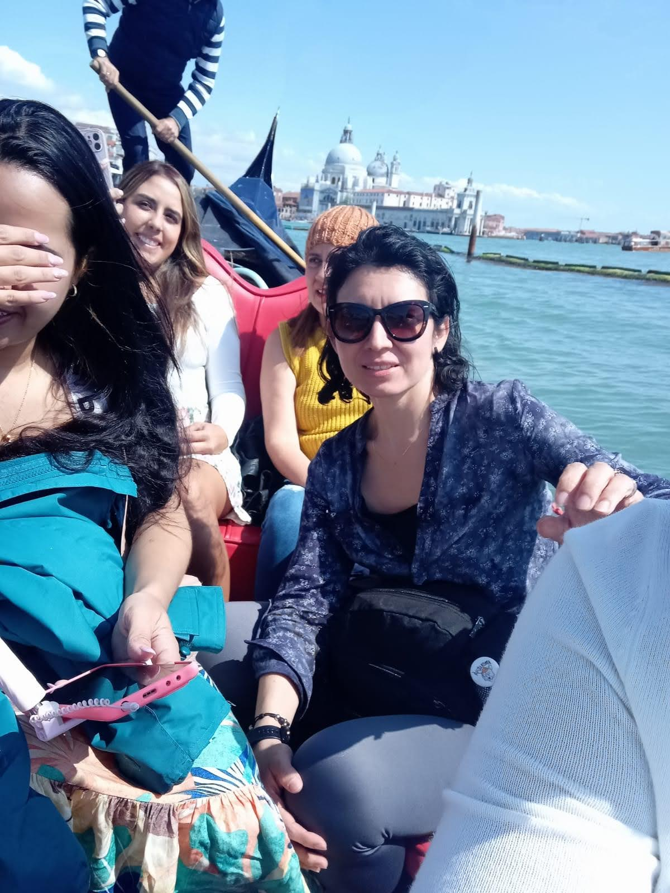

Este es un blog de Turismo por Europa
HOME TURISMO EUROPA RECOMENDACIONES Les contaré sobres los mejores países para visitar y sus ciudades de ensueño cuando decides visitar Europa
Les contaré sobres los mejores países para visitar y sus ciudades de ensueño cuando decides visitar Europa
Italia es un país de ensueño definitivamente porque toda su historia de lleva a viajar en el tiempo cuando posas el primer pie sobre su territorio. Sentir que viajaste a la época del Imperio Romano sin darte cuenta es simplememte impensable, pero lo estás viendo con tus propios ojos.
Aqui te cuento los principales lugares a visitar en la hermosa Italia
Francia el pais que te dejará sin palabras simplememte porque su elegancia y museos nos cuentan la riqueza de sus pensadores y de la creatividad de sus artistas más conocidos a través de la historia
Francia el país de la moda y los diseñadores. Además que este país posee la ciudad del amor o sea París. Como no enamorarse allí.
Qué sitios visitar en Francia
Y como no! visitar la madre Patria, tener a nuestro favor el idioma español para integranos con la bellas personas españolas.
España con su espectacular capital de Madrid adornada por esos hermosos parques y jardines para pasar todo un día recorriendolos; además de sus conocidos museos.
Igualmente, España nos espera con su rica gastronomía la cual es digna de muchos halagos.
Qué sitios visitar en España
Este es el footer de mi página. Ahora voy a poner unos enlaces
Enlace1 Enlace2 Enlace3 Formulario de contacto